Step 2 - 前台購物付款說明
1 快速新增前台AceShop測試商品訂購連結，請登入管理者後台然後選擇Menus/Main Menu/Add New Menu Item
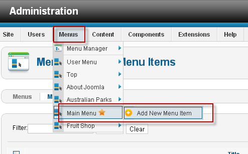
2 在Menu Item Type中請先按Select，選擇Category，在Menu Title輸入在前台所要出現的連結名稱，然後在右上角的Save & Close
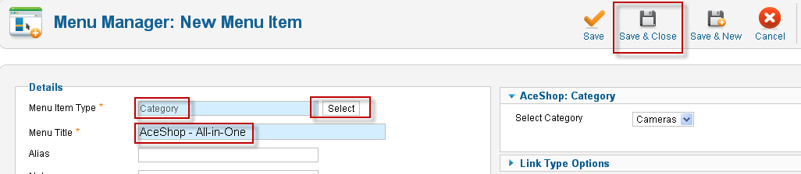
3 請至前台，即會看到AceShop - All-in-One商品訂購連結
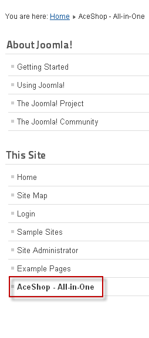
4 點選AceShop - All-in-One後，即會出現商品訂購畫面，對著一筆商品按下Add to Cart後，此時上方會出現已將商品新增至購物車的訊息，然後再按下checkout去結帳
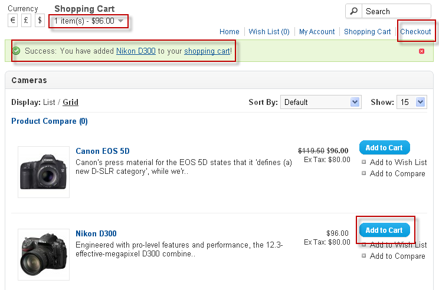
5 至checkout畫面後，依步驟1、2、3、4、5、6結帳
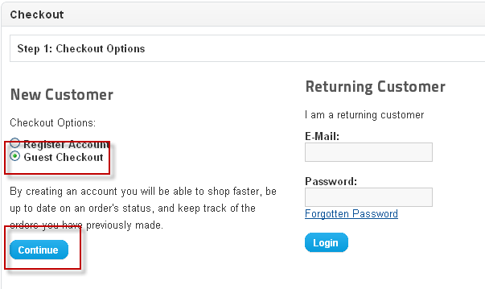
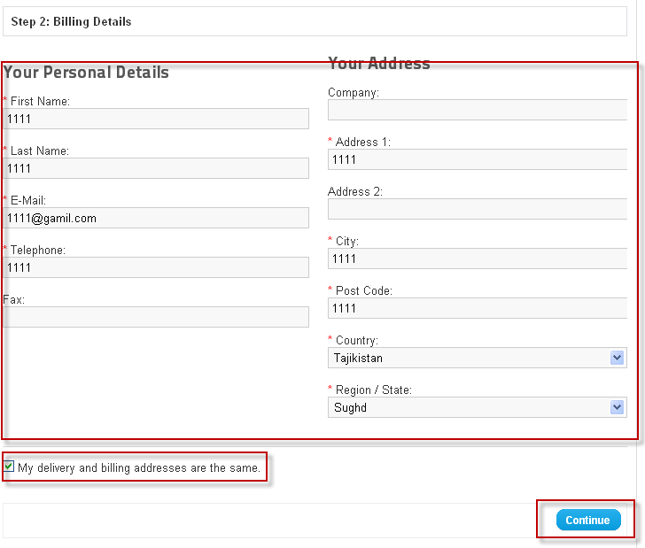
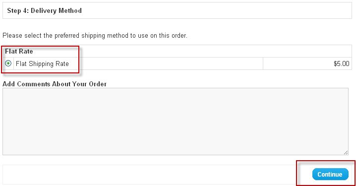
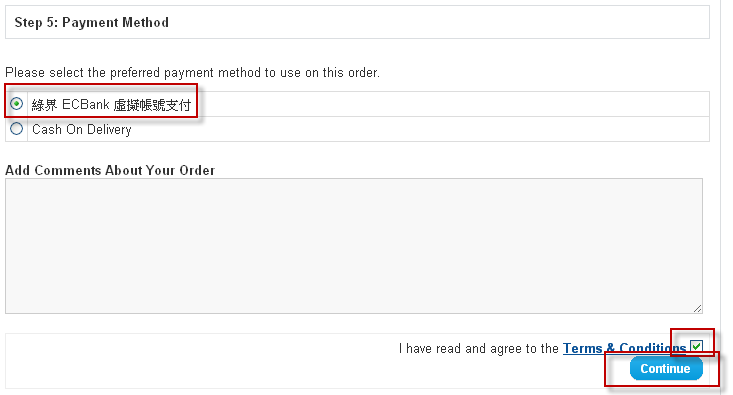
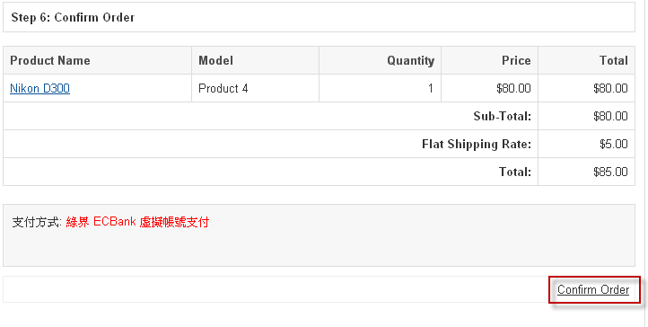
6 成功訂購後所顯示的畫面(成功取號)
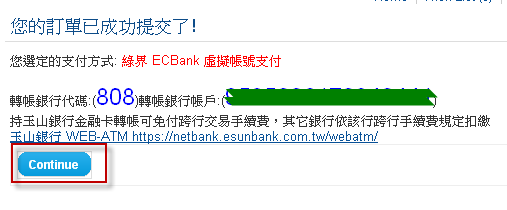
7 此時管理者可至後台查看訂單狀態，請至Components/AceShop/Orders，訂單狀態為Pending，代表訂單已成立，尚未付款
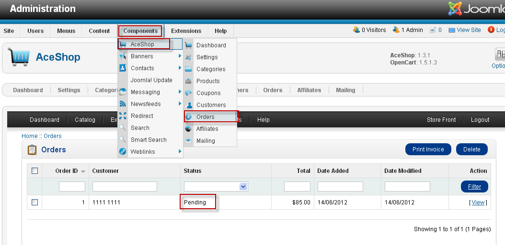
8 請利用您在綠界所申請的ECBank帳號登入並執行模擬觸發(測試用)，如果是真的付款，並不用執行此步驟
一 按下虛擬帳戶繳費明細
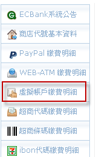
二 對該筆訂單按下『模擬觸發』
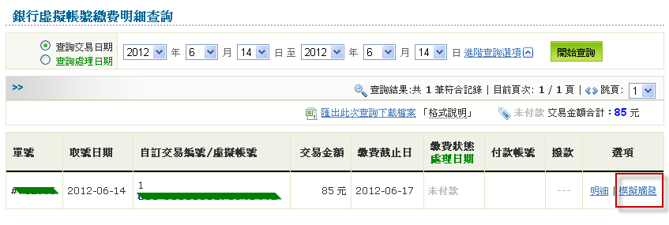
三 按下『執行模擬觸發』
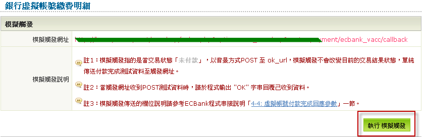
四 執行模擬觸發成功
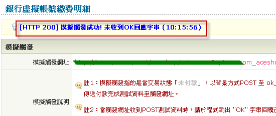
9 管理者再至後台如下圖中查詢訂單，此時訂單狀態為Chargeback，代表買家已付款
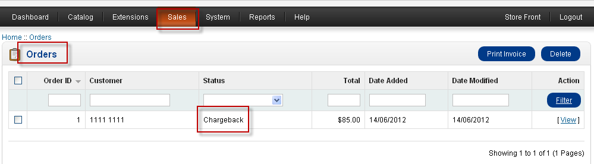
教學結束
若您有任何使用上的疑問歡迎寫信到 services@allpay.com.tw，或至電02-2655-0115 客服部
如果您尚未取得綠界特約商店資格,請來電 02-2655-0115 客服部